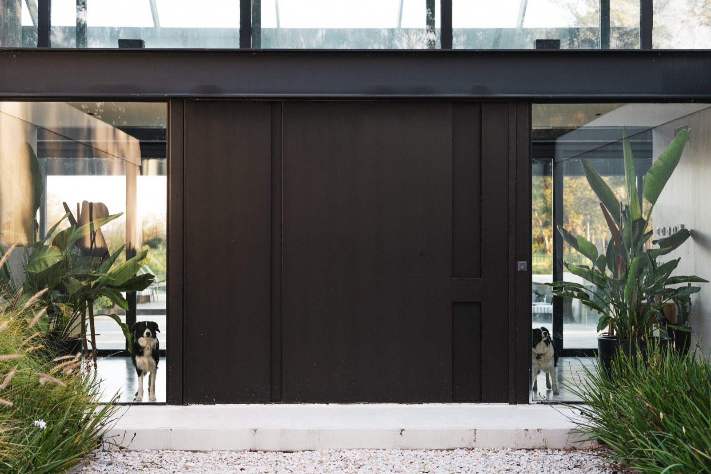
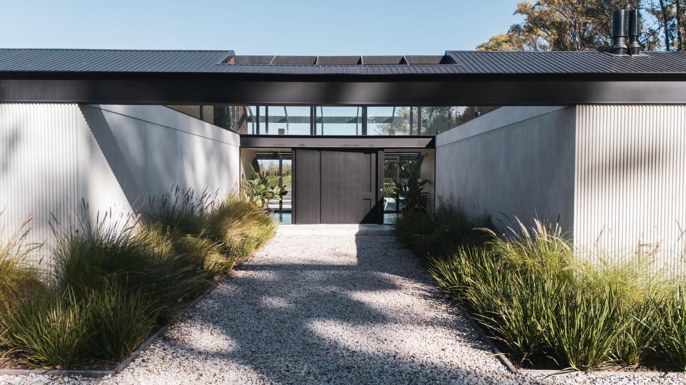
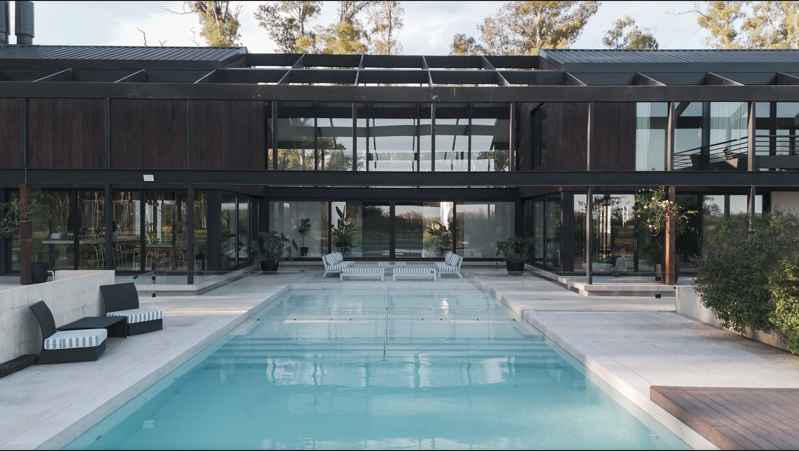
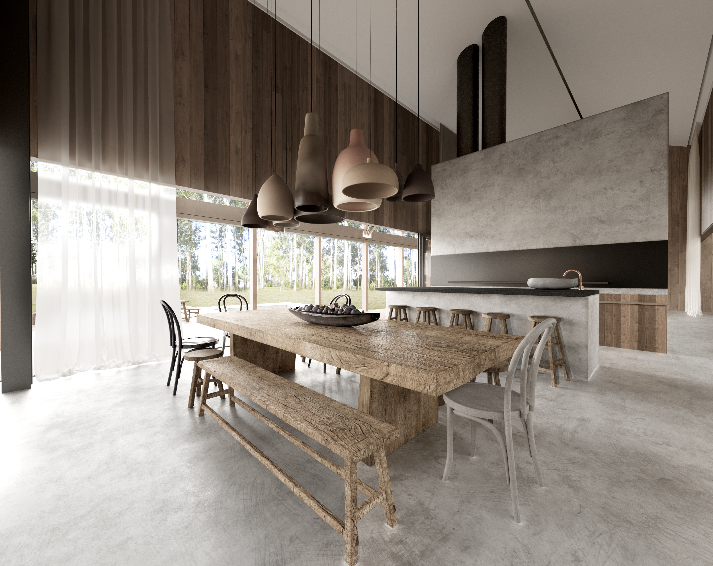
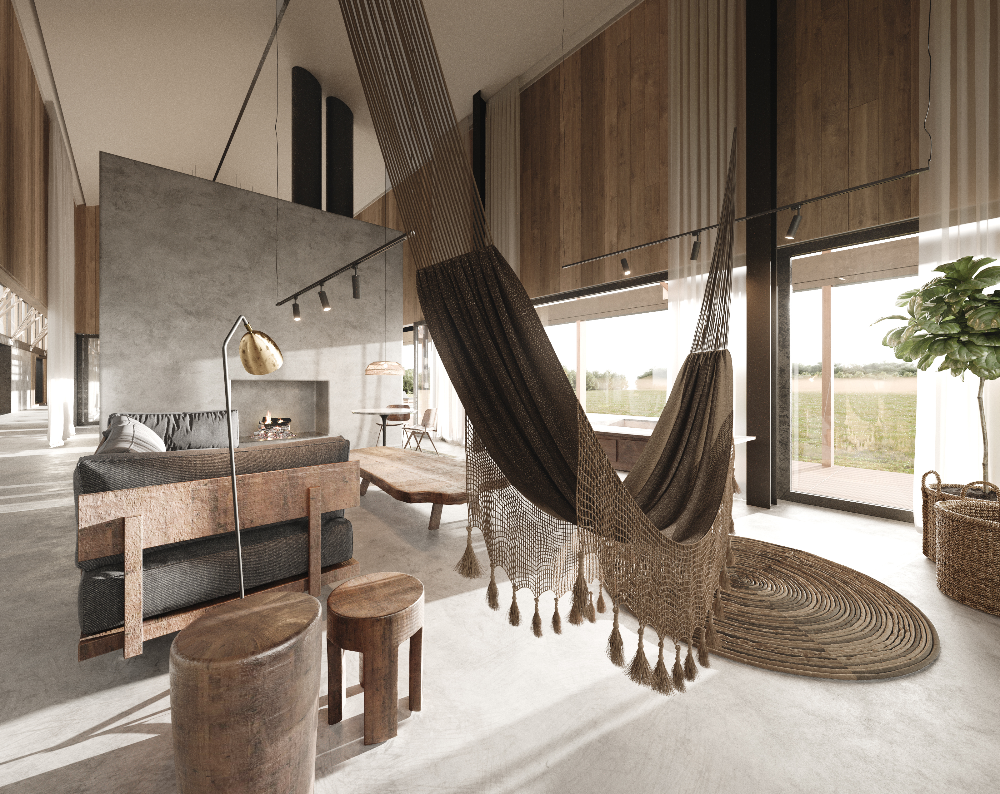
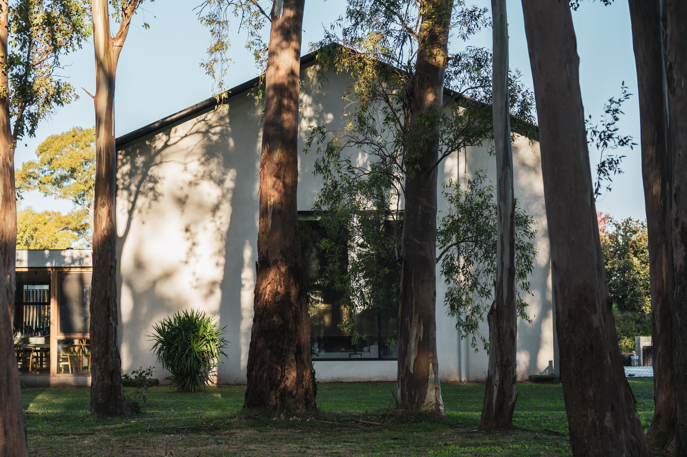
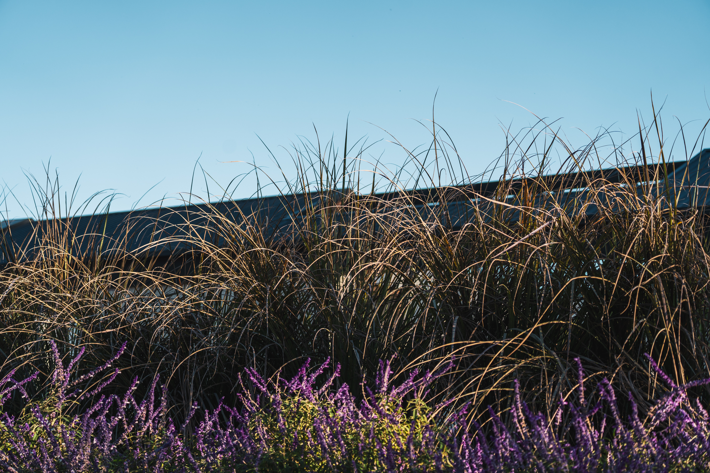
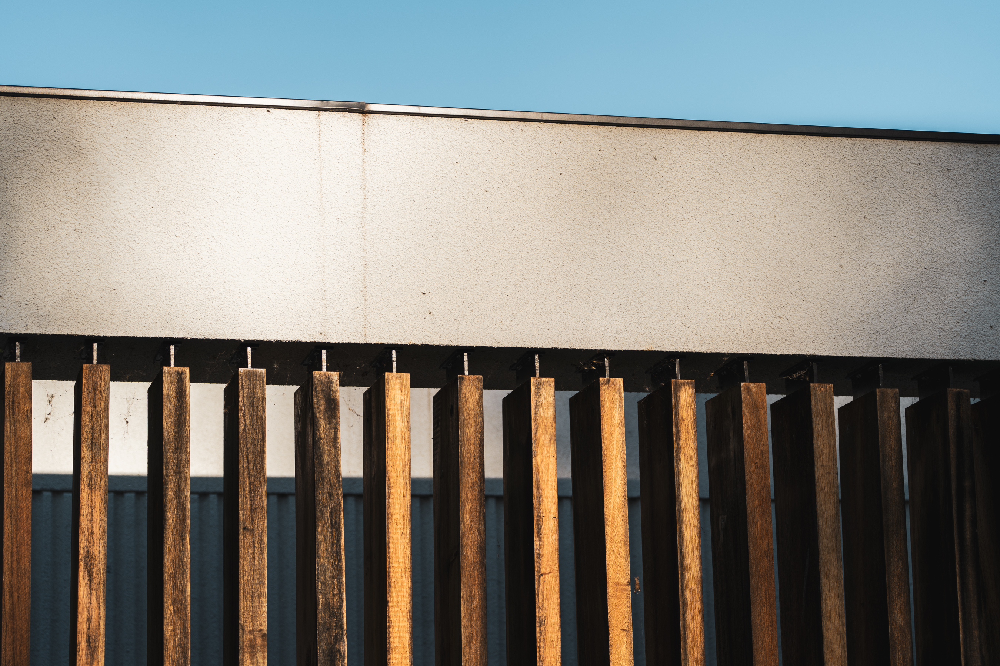

Casa de Campo
Haras San Pablo
Donde la vida familiar moderna se encuentra con la naturaleza
CLIMA /
Templado Subtropical
BIOMA /
Pampa
TERRENO /
3200 m²
ÁREA CUBIERTA /
950 m²
UBICACIÓN /
Buenos Aires,
Argentina


Este proyecto residencial está destinado a una familia extensa, en la que conviven distintas generaciones, ritmos y formas de habitar.
La arquitectura responde a esta complejidad a través de una clara sectorización, que permite construir distintos niveles de privacidad y diversas formas de relación con el paisaje.



El proyecto organiza una secuencia de espacios que van desde lo más abierto y colectivo hacia lo más contenido e íntimo, articulando ámbitos intermedios, protegidos o expuestos. Esta gradación permite que cada usuario encuentre su propio modo de habitar, al tiempo que garantiza un funcionamiento fluido, simple y dinámico del conjunto.
Desde el acceso, la vivienda se presenta como un volumen contenido y hermético, preservando la intimidad respecto del exterior. Hacia el interior, sin embargo, la arquitectura se abre completamente, estableciendo una relación directa con el entorno natural a través de grandes superficies vidriadas y amplios espacios de transición.



La libertad de la naturaleza se traduce en la arquitectura.
La casa se organiza según una lógica clara y equilibrada, definida por la simetría y el orden. Una estructura de carácter industrial, inspirada en tipologías de galpón, se combina con una materialidad cálida y natural, dando lugar a una arquitectura contemporánea, sobria y atemporal.
Así, el edificio se pone al servicio de sus ocupantes: un lugar de encuentro familiar, descanso y disfrute.

